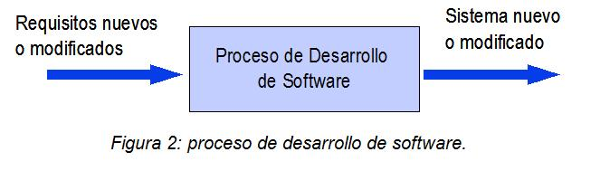

Un proceso de desarrollo de software tiene como propósito la producción eficaz y eficiente de un producto software que reúna los requisitos del cliente. Dicho proceso, en términos globales se muestra en la Figura 2. Este proceso es intensamente intelectual, afectado por la creatividad y juicio de las personas involucradas. Aunque un proyecto de desarrollo de software es equiparable en muchos aspectos a cualquier otro proyecto de ingeniería, en el desarrollo de software hay una serie de desafíos adicionales, relativos esencialmente a la naturaleza del producto obtenido. A continuación se explican algunas particularidades asociadas al desarrollo de software y que influyen en su proceso de construcción.
Un producto software en sí es complejo, es prácticamente inviable conseguir un 100% de confiabilidad de un programa por pequeño que sea. Existe una inmensa combinación de factores que impiden una verificación exhaustiva de las todas posibles situaciones de ejecución que se puedan presentar (entradas, valores de variables, datos almacenados, software del sistema, otras aplicaciones que intervienen, el hardware sobre el cual se ejecuta, etc.).
Un producto software es intangible y por lo general muy abstracto, esto dificulta la definición del producto y sus requisitos, sobre todo cuando no se tiene precedentes en productos software similares. Esto hace que los requisitos sean difíciles de consolidar tempranamente. Así, los cambios en los requisitos son inevitables, no sólo después de entregado en producto sino también durante el proceso de desarrollo.
Además, de las dos anteriores, siempre puede señalarse la inmadurez de la ingeniería del software como disciplina, justificada por su corta vida comparada con otras disciplinas de la ingeniería. Sin embargo, esto no es más que un inútil consuelo.
